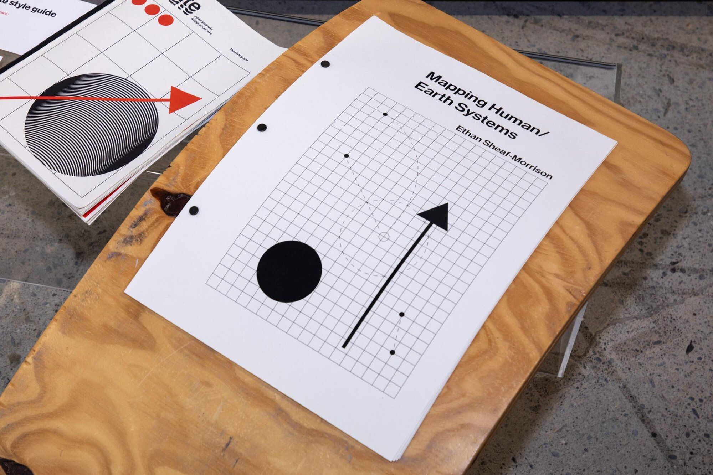
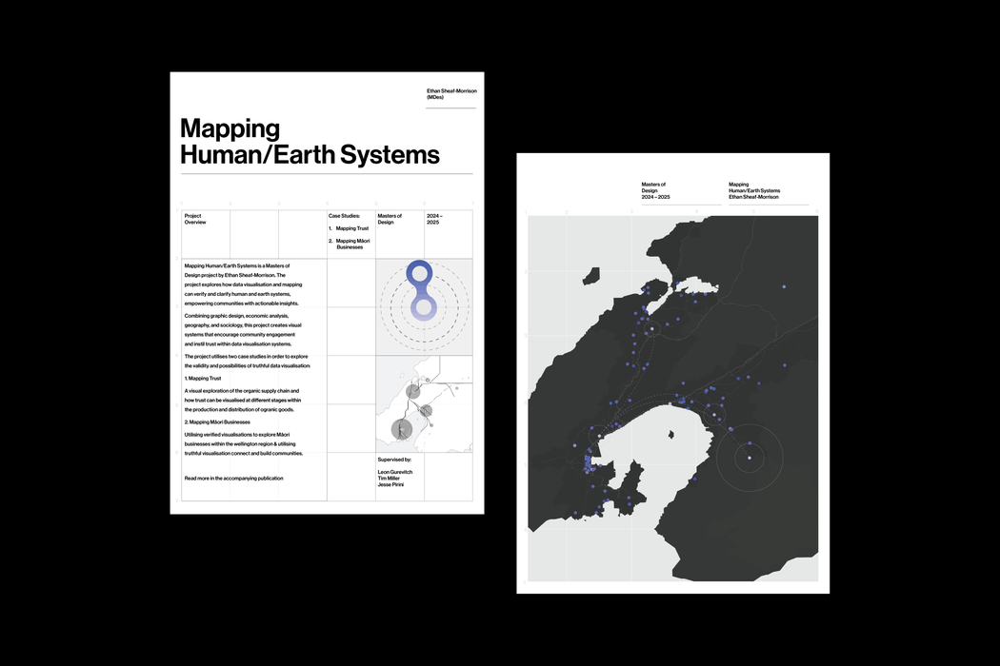
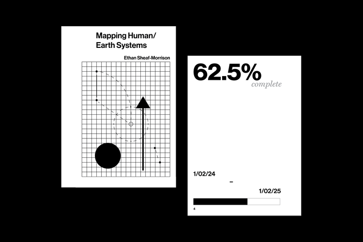
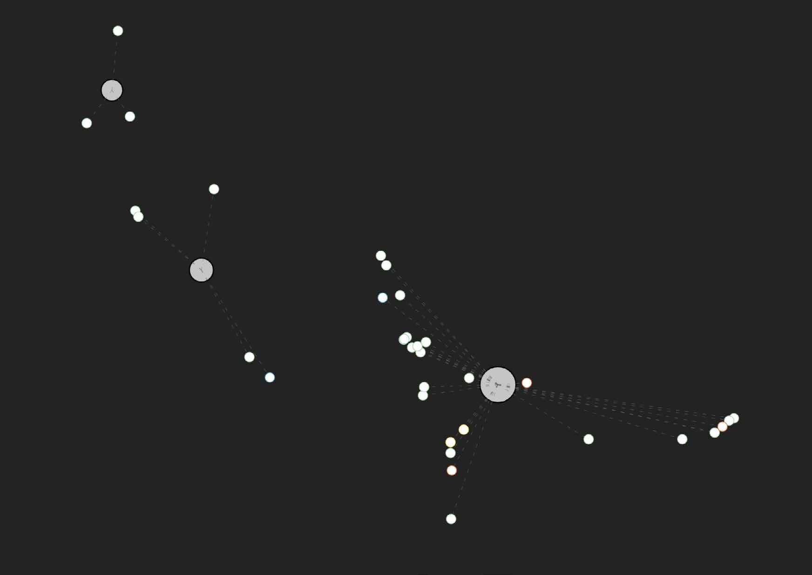
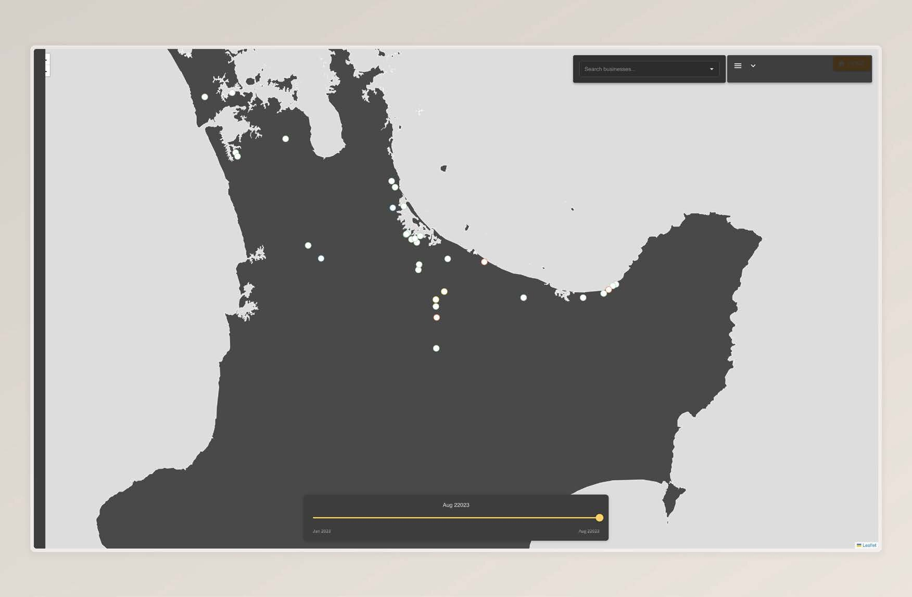
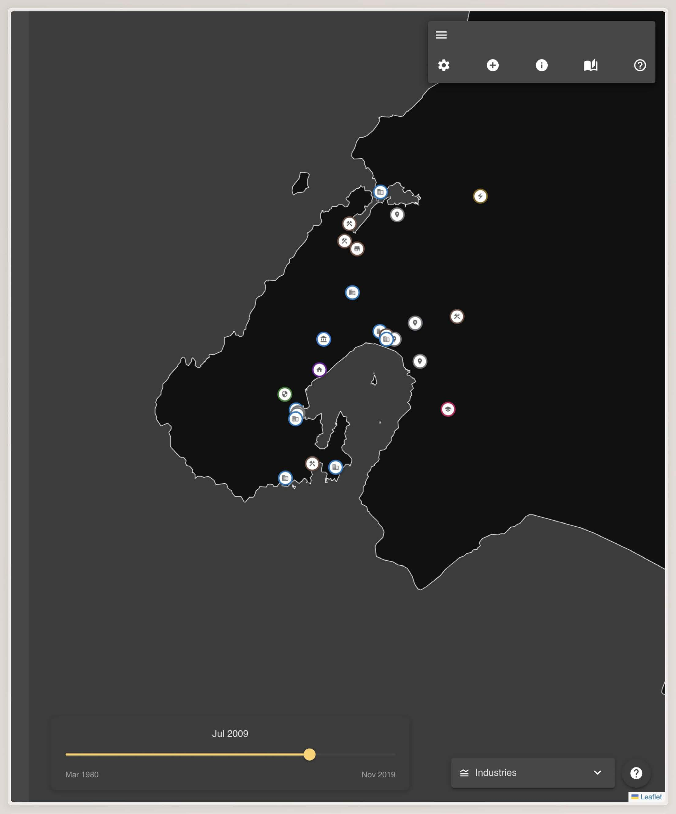

Mapping Human Earth Systems is a participatory mapping and visualisation project. It prototypes ways to show land use, ownership, and relationships between people and place without stripping context or agency from the people represented.
The work runs through two live case studies:
Both prototypes sit inside a reusable system for handling data where consent, provenance, and cultural context are first-class, not afterthoughts.
The project treats truth as something that is not only factual but also situated. It uses two lenses when showing information.
This is about factual accuracy. It covers things that can be verified externally, such as locations, dates, and certification status. A farm was inspected on this date. A business is located here. A certification moved from C1 to C2 in this year.
This is about internal consistency and lived reality. It covers things like community narratives, tikanga, significance of place, and relationships between businesses. These do not behave like fixed data points. They are held in context and they can change.
The interface surfaces both lenses at once. Quantitative layers sit on the map. Qualitative layers open in drawers with context, source, and constraints. Short narrative snapshots sit alongside the map so users can read why something matters, not just where it is.
The work follows an iterative loop.
Representation → Process → Evaluation → Change → Impact → Decision.
In practice this means: gather material, prototype with it, test with the community it describes, adjust, and only then treat anything as publishable.
The map is not treated as neutral output. It is an active site where evidence and design inform each other.
The project is built to remove four common barriers to community owned mapping.
This prototype maps organic growers by certification stage across time.
Organic certification is not a yes or no state. It is a staged process that can take years.
The interface lets the user scrub through time and see who is progressing, who is stalled, and where change is happening. The basemap is intentionally minimal to prioritise legibility over satellite texture.
A table view exposes the underlying records in full, with personal information removed.
Early experiments in Unreal Engine were used to test immersive mapping and spatial storytelling, but the final delivery is browser based for accessibility and performance.
This prototype maps Māori business presence and relationships in Wellington. It is opt in.
It supports multiple forms of verification.
The system presents two main views.
Users can also view sites of significance with culturally aware iconography and contextual explanation instead of generic map pins.
The system is built for participation rather than extraction.
The onboarding flow explains what the map is for, who it represents, and how contributions will be handled.
A short guided walkthrough introduces interaction patterns and data visibility.
A transparency panel links directly to sources, collection methods, and known gaps rather than hiding them in footnotes.
The output is not just a pair of demos.





| D’Ignazio, C., & Klein, L. Data Feminism. |
| Drucker, J. “Humanities Approaches to Graphical Display.” |
| Kukutai, T., & Taylor, J. Indigenous Data Sovereignty. |
| Tufte, E. The Visual Display of Quantitative Information. |
| Wilkins, D. “Sites of significance” guidance. |
Full bibliography in thesis PDF.